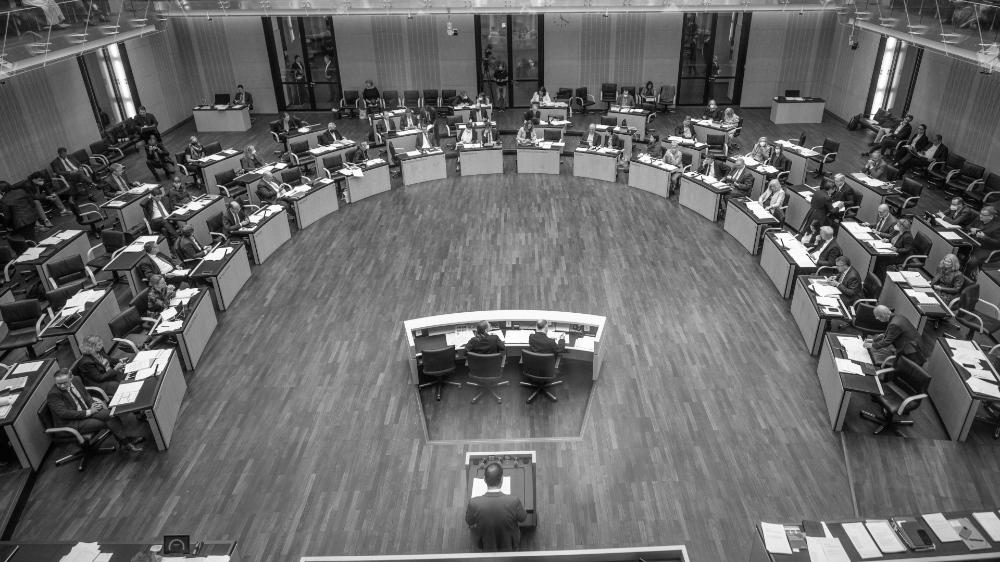

Diskussion und Kritik
06. Dezember 2022 / 3 Minuten zu lesen
Vor allem die CDU und CSU kritisierten die Sozialreform scharf und nutzten ihre Position im Bundesrat, um einen Kompromiss zu erzwingen.
Diskussion und Kritik
Das Bürgergeld wurde gemischt aufgenommen. Während Arbeitnehmer- und Sozialverbände dem Vorschlag des SPD-geführten Arbeitsministeriums unter Hubertus Heil positiv gegenüberstanden, gab es vor allem durch die CDU und CSU Kritik. Während diese die Erhöhung der Regelsätze um 53 Euro befürwortete, wurden vor allem das Schonvermögen und fehlende Sanktionen kritisch gesehen. Der Vorwurf lautete, dass sich Arbeit nicht mehr lohnen würde und der Einkommensabstand zu Niedriglohnjobs zu gering wäre. Das Bürgergeld wäre somit ungerecht. Zudem würden Motivation und Anreize für Arbeit fehlen, da das Bürgergeld eine starke Verringerung von Sanktionen vorsah und dieses vom Prinzip “Fördern und Fordern” abweichen würde.
Vor allem Schonfrist und -vermögen wurden als zu hoch kritisiert, die Reform würde falsche Anreize schaffen. Als das Bürgergeld im Bundestag durch die Mehrheit von SPD, den Grünen und der FDP beschlossen wurde, drohten die Unionsparteien mit einer Blockade im Bundesrat und schlugen vor, bis zum 1. Januar nur die Regelsätze zu erhöhen. Vor allem SPD und Grüne widersprachen der Union und warfen dieser vor, falsche Rechenwerte bezüglich des Einkommens anzugeben. Zudem hätten CDU und CSU während der Corona-Pandemie ähnliche Programme unterstützt und würden somit keinen Respekt gegenüber den Bedürftigen zeigen.
Leistungs- und Einkommensberechnungen
Das Hauptargument der Unionsparteien, die Ungerechtigkeit gegenüber Arbeitenden, wurde auf mehrere Beipiele zur Leistungs- und Einkommensberechnung gestützt. Dabei würde beispielsweise laut CSU eine arbeitende Person mit Niedriglohnjob nur einen Eure mehr Einkommen haben als Bürgergeldberechtigte. Diese Darstellung wurde allerdings ebenfalls kritisiert, da bestimmte Sozialhilfen, die auch arbeitenden Menschen zur Verfügung stehen, nicht berücksichtigt wurden. Von Befürwortenden des Bürgergeldes wurde der Union Oppositionspopulismus vorgeworfen. Die Ampel-Koalition wurde ebenfalls deshalb kritisiert, da deren Rechenbeispiele ebenfalls ungenau und irreführend gewesen sein sollen.
Populismus
"Populismus bezeichnet eine Politik, die sich volksnah gibt, die Emotionen, Vorurteile und Ängste der Bevölkerung für die eigenen Interessen und Ziele nutzt und vermeintlich einfache und klare Lösungen für politische Probleme anbietet" (Bundeszentrale für Politische Bildung). Vereinfachte oder falsche Aussagen sind ein häufiger Bestandteil des Populismus.Neben der Union wurde das Bürgergeld ebenfalls von den anderen Oppositionparteien kritisiert. Die Linke erachtete die Maßnahmen als nicht ausreichend, während die AfD das Bürgergeld vollständig ablehnte.
Blockade im Bundesrat
Nach dem Beschluss im Bundestag wurde das Gesetzesvorhaben wie angekündigt durch die unionsgeführten Länder abgelehnt. Anschließend wurde durch den Vermittlungsausschuss ein Kompromiss erarbeitet, welcher ein niedriges Schonvermögen (40.000 Euro statt 60.000 Euro), eine niedrigere Schonfrist und sofortige Sanktionen bei Ablehnung von Jobangeboten vorsah.
Bundestag
Der Deutsche Bundestag ist das Parlament der Bundesrepublik Deutschland. Dieser ist aus den in der Bundestagswahl gewählten Abgeordneten und Fraktionen. Dort werden Gesetze debattiert und beschlossen. Im Bundestag hat die Ampel-Koalition aus SPD, Bündnis 90/Die Grünen und FDP die Mehrheit.Bundesrat
Im Bundesrat können die einzelnen Bundesländer Deutschlands an der Bundesgesetzgebung mitwirken und besteht aus Mitgliedern der Landesregierungen der 16 Bundesländern. Der Bundesrat ist dabei die zweite Gesetzgebene Instanz und muss den im Bundestag beschlossenen Gesetztesvorhaben zustimmen. Im Bundesrat haben die von der Union aus CDU und CSU geführten Landesregierungen die Mehrheit.Vermittlungsausschuss
Sind sich Bundestag und Bundesrat uneinig, sieht das Grundgesetz vor, dass ein Vermittlungsausschuss eingesetzt wird. Dieser besteht aus 32 Mitgliedern, jeweils zur Hälfte aus dem Bundestag und Bundesrat. Der Ausschuss soll einen Kompromiss erarbeiten, welchem beide Instanzen zustimmen. Kann kein Kompromiss gefunden werden, scheitert das entsprechende Gesetz.Nach Abschluss wurde der Kompromiss sowohl von der Ampel-Koalition, als auch von der Union und Arbeitgeberverbänden unterstützt, stieß aber auf weitere Kritik. Vor allem die Linke und Sozialverbände zeigten sich enttäuscht, da die Regelungen keine ausreichende Hilfe für Langzeitarbeitslose und lediglich einen Inflationsausgleich darstellen würden. Einige Armutsforschende sprechen auch von einer Reformruine.